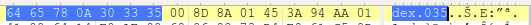

本文主要记录了如何修改jadx使其支持dex.037
前缘
某次需要分析一台安卓7.1.1的设备，将其framework拖出来后用jadx反编译,结果报错：
根据错误提示，可知jadx遇到了无法识别的文件魔数（magic sum），所以抛出异常，程序终止。
magic sum 数组与ascii码对应如下：
| 100 | 101 | 120 | 10 | 48 | 51 | 55 | 0 |
|---|---|---|---|---|---|---|---|
| d | e | x | . | 0 | 3 | 7 | 0 |
所以jadx报错的原因，就是其无法识别文件头为dex.037的dex文件。
我们常见的dex文件头都是dex.035：

其实在安卓7.0之后，谷歌更新了dex文件，推出了dex.037版本：
谷歌对此次更新的描述如下：
也就是说，在某种程度上，可以认为dex.037和dex.035没有区别。
关于dex文件格式详见Dalvik 可执行文件格式
通过上面的分析，关于如何修复jadx这个错误,有两个方案：
- 一、使用010editor直接修改dex文件头
- 二、增加jadx对dex.037的支持
作为懒鬼，我选第二种。
后果
jadx将出错时的函数调用堆栈打印出来，根据输出，定位到出错位置：
| com.android.dex.TableOfContents.readHeader(TableOfContents.java:79) ~[dx-1.10.jar:na] |
dx-1.10.jar应该是jadx使用的一个lib，这个jar包中TableOfContents类的readHeader方法抛出了这个异常。
在jadx源码中找到这个jar包，位于jadx/jadx-core/lib/，反编译看一下：
这看起来就是安卓sdk中/build-tools/(version)/lib下的一个包。
到这里又有了新的思路：jadx引用了安卓sdk中的一个lib来解析dex，可能因为这个lib版本老旧，不支持dex.037；我们是否可以用支持dex.037的新版lib替换掉jadx中的旧版？
这个想法我没去验证，有兴趣的同学可以做一下。
找到抛异常的地方：
readHeader方法判断了DexFormat.magicToApi的返回值，只要不是13就报错。
看一下DexFormat.magicToApi方法：
很明显，只有文件头是dex.035时函数才会返回13,我们要做的就是修改这个方法，使得文件头是dex.037时也返回13。
从jar包中拖出DexFormat.class文件，使用jclasslib打开，找到magicToApi方法返回14的地方：
这两个指令的含义用伪代码表示为：return (int)14；用十六进制字节码表示为：0x10 0x0e 0xac。
将其返回值改为13,将VERSION_CURRENT的值改为037即可。
用010Editor打开DexFormat.class，将036改为037,将10 0e ac改为10 0d ac：

替换jar包中的这个文件，重新编译jadx运行，完美支持dex.037。
至此，大功告成。